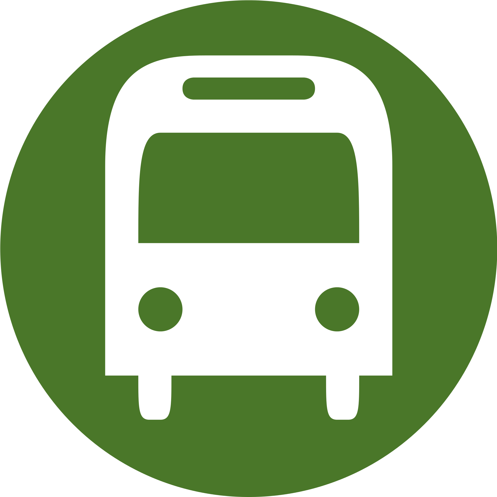

<!DOCTYPE html>
<html lang="en">
<head>
    <meta charset="UTF-8">
    <meta http-equiv="X-UA-Compatible" content="IE=edge">
    <meta name="viewport" content="width=device-width, initial-scale=1.0">
    <title>Map</title>
    <link rel="stylesheet" href="https://unpkg.com/leaflet@1.7.1/dist/leaflet.css"
   integrity="sha512-xodZBNTC5n17Xt2atTPuE1HxjVMSvLVW9ocqUKLsCC5CXdbqCmblAshOMAS6/keqq/sMZMZ19scR4PsZChSR7A=="
   crossorigin=""/>
   <script src="https://unpkg.com/leaflet@1.7.1/dist/leaflet.js"
   integrity="sha512-XQoYMqMTK8LvdxXYG3nZ448hOEQiglfqkJs1NOQV44cWnUrBc8PkAOcXy20w0vlaXaVUearIOBhiXZ5V3ynxwA=="
   crossorigin=""></script>
   <link rel="stylesheet" href="https://unpkg.com/leaflet-routing-machine@latest/dist/leaflet-routing-machine.css" />
   <script src="https://unpkg.com/leaflet-routing-machine@latest/dist/leaflet-routing-machine.js"></script>
   
   <style>#map { height: 500px; } .my-div-icon{display: flex; flex-direction: column; align-items: center;} .my-div-image{height:30px; width: 30px;} .my-div-span{background-color: aquamarine; width: 30px; text-align: center;} </style>
   <!-- <style>#map { height: 500px; } .my-div-image{height: 30px; width: 30px;}</style> -->
</head>
<body>
    <div id="map"></div>
    <div id="map2"></div>


    <script>
        const coor = [6.0414871153222895, 116.12465479443016];
        const style= {radius: 200, fill: false, opacity: 1, weight: 10, interactive: false};
        var map = L.map('map').setView(coor, 15);
        L.tileLayer('https://{s}.tile.openstreetmap.org/{z}/{x}/{y}.png', {
            attribution:  '&copy; <a href="https://www.openstreetmap.org/copyright">OpenStreetMap</a> contributors'
        }).addTo(map);
        let busCoord= [6.036882734264042, 116.1216452371031];

        // const myIcon = L.icon({
        //     iconUrl: 'bus.png',
        //     iconSize: [30, 30]
        // });

        // L.marker(busCoord, {icon: myIcon}).addTo(map);

        var myIcon = L.divIcon({className: 'my-div-icon',
        html: '<span class="my-div-span">2</span>',
        iconSize: [40, 40],
        iconAnchor: [20, 20]
        });
        // you can set .my-div-icon styles in CSS

        L.marker(busCoord, {icon: myIcon}).addTo(map);
        L.circle(busCoord).addTo(map);
        // L.Routing.control({
        //   waypoints: [
        //     L.latLng(6.038536978708779, 116.1235926110215),
        //     L.latLng(6.035741678830313, 116.11331654733198)
        //   ]
        // , createMarker: function() { return null; }, addWaypoints: false, draggableWaypoints: false, show: false, lineOptions: {
        // styles: [{
        //   radius: 200, fill: false, opacity: 1, weight: 10, interactive: false
        // }]
        // }}).addTo(map);
        
        // ///////////////////////////////////
    //     var routeArray = routeControl.getWaypoints();

    // console.log(routeArray);
    //////////////////////////////////////////////

var latlngs = [
  [6.03575, 116.11329],
  [6.03572, 116.11328],
  [6.03572, 116.11328],
  [6.03545, 116.11391],
  [6.0353, 116.11424],
  [6.03526, 116.11434],
  [6.03516, 116.11458],
  [6.03494, 116.11509],
  [6.03487, 116.11534],
  [6.03486, 116.11539],
  [6.03487, 116.11545],
  [6.03488, 116.11557],
  [6.03491, 116.11571],
  [6.03496, 116.11585],
  [6.03502, 116.11597],
  [6.03518, 116.11615],
  [6.03553, 116.11638],
  [6.03577, 116.11655],
  [6.03592, 116.11665],
  [6.03608, 116.11675],
  [6.03634, 116.11693],
  [6.03701, 116.11742],
  [6.03711, 116.11751],
  [6.03723, 116.11761],
  [6.0373, 116.11768],
  [6.03747, 116.11785],
  [6.03759, 116.11796],
  [6.03769, 116.11807],
  [6.03803, 116.11847],
  [6.03832, 116.1189],
  [6.03844, 116.11911],
  [6.03885, 116.11989],
  [6.03914, 116.12057],
  [6.03914, 116.12057],
  [6.03922, 116.12089],
  [6.03923, 116.121],
  [6.03925, 116.12155],
  [6.03924, 116.1219],
  [6.03914, 116.12229],
  [6.03902, 116.12264],
  [6.03855, 116.12348],
  [6.03849, 116.12358],
  [6.03849, 116.12358],
  [6.03878, 116.1237],
  [6.0391, 116.12381],
  [6.03964, 116.12398],
  [6.03972, 116.12401],
  [6.03994, 116.12409],
  [6.04145, 116.12469],
  [6.04203, 116.12489],
  [6.04214, 116.125],
  [6.04244, 116.12555],
  [6.04266, 116.1257],
  [6.04288, 116.12581],
  [6.04308, 116.12588],
  [6.04328, 116.12593],
  [6.04354, 116.12594],
  [6.04419, 116.12597],
  [6.04466, 116.12598],
  [6.04524, 116.12643],
  [6.04541, 116.12661],
  [6.04547, 116.12673],
  [6.0455, 116.1269],
  [6.04545, 116.1271],
  [6.04528, 116.12759],
  [6.04525, 116.1277],
  [6.04525, 116.12781],
  [6.0452, 116.1281],
  [6.0452, 116.1284],
  [6.04519, 116.12904],
  [6.04519, 116.12925],
  [6.04519, 116.12962],
  [6.04519, 116.12982],
  [6.04519, 116.1301],
  [6.04519, 116.13018],
  [6.04518, 116.13056],
  [6.04518, 116.13081],
  [6.04518, 116.13088],
  [6.04518, 116.1311],
  [6.04518, 116.1311],
  [6.04516, 116.13109],
  [6.04516, 116.13109]
];

var polyline = L.polyline(latlngs, {color: 'red'}).addTo(map);


    
////// //////////////////////////////////////////
    //   const banana = L.Routing.control({
    //   waypoints: [
    //   L.latLng(6.035741678830313, 116.11331654733198),
    //     L.latLng(6.045154278340483, 116.13110931346655)
    //   ]
    // , showAlternatives: true, createMarker: function() { return null; }, addWaypoints: false, draggableWaypoints: false, show: false, lineOptions: {
    // styles: [{
    //   radius: 200, fill: false, opacity: 1, weight: 10, interactive: false
    // }]
    // }}).addTo(map);
      
/////////////////////////////////////////////
    //   var map = L.map('map');

    //   L.tileLayer('http://{s}.tile.openstreetmap.org/{z}/{x}/{y}.png', {
    //       attribution: '© OpenStreetMap contributors'
    //   }).addTo(map);

    //   var wayPoint1 = L.latLng((6.038710911235551, 116.12365308329946); 
    //   var wayPoint2 = L.latLng(6.033120861071266, 116.11789589320135);

    //   rWP1 = new L.Routing.Waypoint;
    //   rWP1.latLng = wayPoint1;    

    //   rWP2 = new L.Routing.Waypoint;
    //   rWP2.latLng = wayPoint2;    

    //   var myRoute = L.Routing.osrmv1();
    //   myRoute.route([rWP1, rWP2], function(err, routes) {
    //       distance = routes[0].summary.totalDistance;
    //       console.log('routing distance: ' + distance);
    //   });

    //   map.fitBounds(L.latLngBounds(wayPoint1, wayPoint2));

    // ACTIVE_DAY_ROUTE = L.Routing.control({
    //       show: false,
    //       waypoints: routeWaypoints,
    //       router: ROUTER,
    //       routeWhileDragging: false,
    //       draggableWaypoints: false,
    //       lineOptions: {
    //         styles: [{
    //           color: ROUTE_COLOR,
    //           opacity: ROUTE_OPACITY,
    //           weight: 4
    //         }]
    //       },
    //       createMarker: function() {
    //         return null;
    //       }
    //     });


// ???????????????????????banana._routes
        // console.log(banana);
        

        // var result = {
        //     name: '',
        //     coordinates: [],
        //     instructions: [],
        //     legs: '', // HACK HERE
        //     summary: {
        //       totalDistance: responseRoute.distance,
        //       totalTime: responseRoute.duration
        //     }
        //   },


      // result.legs = responseRoute.legs; // HACK HERE - Affect leg

    </script>
</body>
</html>

